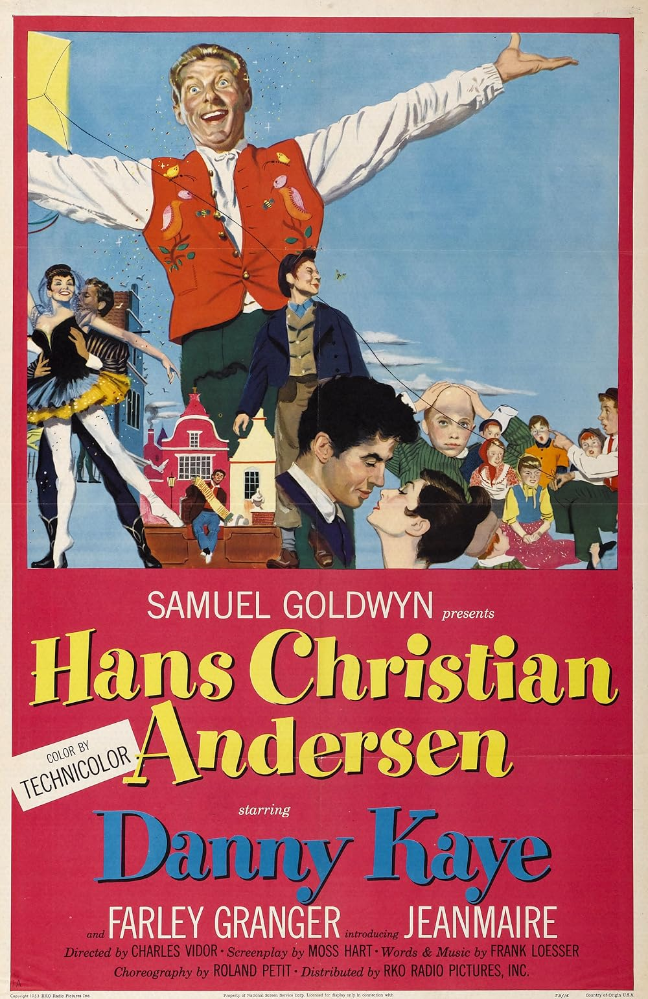

Hans Christian Andersen
25th Academy Awards
(Oscars 1953)
6 Nominations, 0 Awards
| Nominations | ||
|---|---|---|
| Category | Nominees | Result |
| Cinematography (Color) | Harry Stradling | Nominated |
| Art Direction (Color) | Clave, Howard Bristol, and Richard Day | Nominated |
| Costume Design (Color) | Clave, Madame Karinska, and Mary Wills | Nominated |
| Sound Recording | Gordon Sawyer | Nominated |
| Music (Scoring of a Musical Picture) | Walter Scharf | Nominated |
| Music (Song) "Thumbelina" |
Frank Loesser | Nominated |